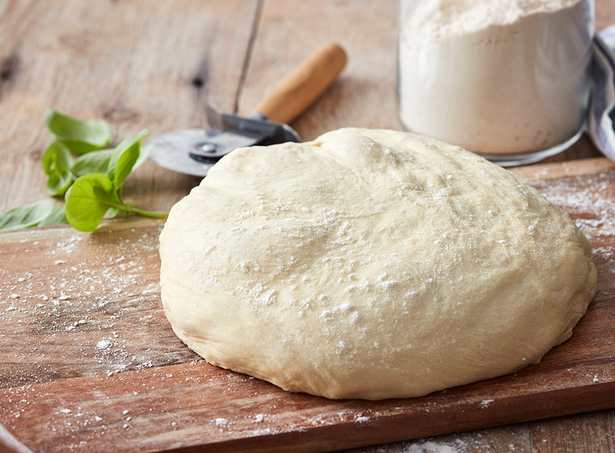

Pizza Dough Recipe 😊

Description
This recipe will guide you through making your own pizza dough in less than 10 minutes! You will need a blender with a dough attachment. You will also need a weigh scale (recommended) or standard measurement cups and spoons.
Ingredients
- Warm water - ½ cup
- Room temprature - as required for kneeding
- All purpose flour - 473.18 grams (2 cups)
- Active dry yeast - 1 tsp
- Granulated Sugar - 1 tsp
- Extra virgin olive oil - 2 tbsp
- Salt - 1/2 tsp
Steps
- First, in a small mixing bowl add warm water, sugar and dry yeast and give a quick mix.
- Allow it to rest for 5 minutes.
- Now add all purpose flour, salt in blender (with dough attach in already).
- Pulse the blender a few times to mix everything.
- Add olive oil and the yeast mixture.
- Pulse a few times, add water in small amount and pulse again, repeat unless the mixture turns to dough
- Remove the dough, place in a large bowl, tuck the dough and form to a ball.
- Cover rest and rise in a warm place for about 2 hours.
- Punch the dough with fist to release down the air.
Source: Recipe Source